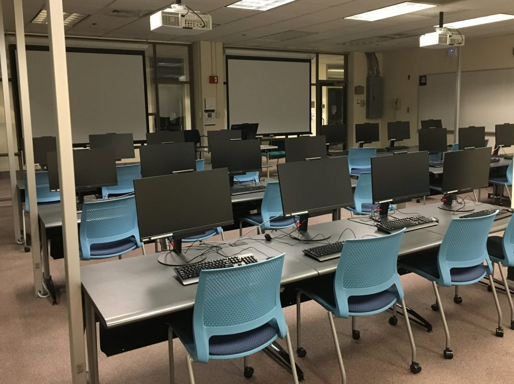

Most computer laboratory designs in South Africa are in a classic classroom computer lab layout. Which the layout is as the one below:
The classic classroom computer lab configuration fills in as the default design in many High School and Colleges. In many High Schools this design has been implemented but instead of using the normal screen and board computers, schools have now upgraded to using laptops. I applaud the schools for doing so as it will save a lot of space and also it will also save the spaces for cables and the motherboards giving classrooms more space for more technological devices. The manner in which this design is laid out allows the teacher to have all learners attention in such a way that they will be facing the front and they will all be able to see what the teacher is teaching without having to constantly turn their heads
However I would not vouch so much for this type of Computer Laboratory design because when it will be time for learners to write their tests or examinations they will be able to see others answers and that wouldn’t be a fair assessment, also as we all know that we have been experiencing COVID-19 it would not be very wise for a computer laboratory to have such small spaces and apart from having COVID -19 I think it would be very wise that every learners has their own space. Another disadvantage of having such a layout would be that the teacher will not be able to move around or see if the learners are following the instructions given in class when it comes to practical’s and all that, moving around will be difficult when learners seeks for assistance as other learners would have to move in order for the teacher to reach the learners who requires assistance.
Therefore the suggestion that I would make for a computer laboratory design will be that it has more space, yes the learners can face the teacher as this will emphasize that students are there to learn but in as much as there are spaces in between the tables of a normal classroom then there should be space for each and every technological device as this will also help when it comes to assessing the learners and making it fair. The teacher will also be able to move around the classroom freely without disturbing or struggling to any learner that will need their assistance and also learners will have some privacy as to being free to do their work in peace without having anyone look on them. When it come to the teachers ability to see if whether the learners are following the lesson, a mirror can be installed at the back of the class so that the teacher can see that all learners are following the lesson

This is an example of the design I would go with except I would prefer that it has more spaces between the tables and also a mirror at the back of the classroom.